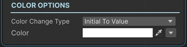

Change Text Outline Color Sequential

This sequential changes the outline color of a TextMeshPro with animation.
Base Properties
To learn about the common Base Properties, please see Base Sequential
Target Object Options
This sequential derives from Object Returner Sequential and gets all its properties from that sequential. So, to learn about the Target Object Options please see Object Returner Sequential
Animation Options
This sequential derives from Animation Sequential and gets all of its properties. So, to learn about the __Animation Options please see Animation Base
Target Object
Target Object (or Target Objects if Multiple Objects are returned) needs to be TextMeshPro type. So please make sure that the game object assigned in this field has a TextMeshPro component attached. Otherwise you'll see a runtime error log when this sequential plays.
Color Change Type
This option determines the calculation of the end color.
Initial to Value
This changes the outline color of the target text from its initial value (the value before this sequential starts) to the Color value.
From Value to Initial
This instantly sets the outline color of the target text to the Color and then modifies it to its initial value again with animation.
Initial Plus Value
This adds Color to the target text's initial outline color value and changes it to the calculated value.
Initial Multiply Value
This multiplies each component (R,G,B,A) of the text's initial outline color with the corresponding component of the Color and changes the target text outline color to the calculated color value.
From A to B
This lets you define the starting outline color and end outline color of the animation independent from the initial outline color of the target text.
Color
This is the Color value that determines the end outline color in accordance with the Color Change Type option as explained above.
It's possible to assign different kind of values to this property (e.g. directly, randomly, from variable).
Info
To learn more about assigning values with different options, see Value Assign
From Color
This is only available when the Color Change Type is From A to B.
This is the starting outline color value of the animation.